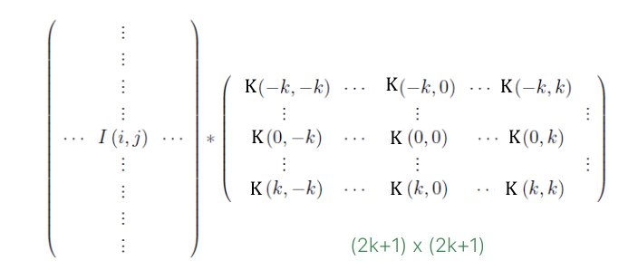

Convolution
In two words, a convolution is: rotation + translation.
It is a linear mapping translation-equivariant.
Tranlsation-equivariant means:
A convolution is: If you really want to understeand why this shit is usefull 3b1b) knows his shit.
Convolution in image processing
In image processing we not work with continue values but with descrete ones. In practice, then, we compute a convolution multiplying a matrix (kernel) with all the values in the image. 
But we can do this only if we are not in the edges, otherwise we would not have enough values for the convolution computation. In order to solve this problem, we can:
- crop the image and discard the edges
- replicate the pixel in the edges so that we can now compute the convolution
- reflect the pixel in the edges
- add zeros to the edges
- ...